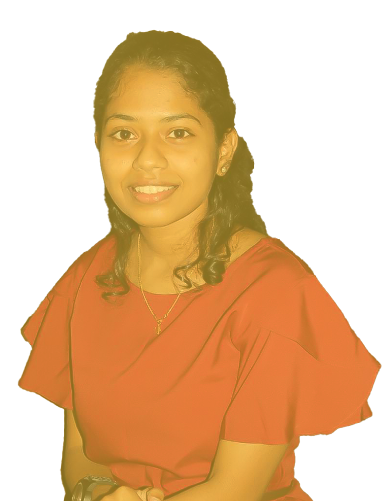

VAISHNA
ABOUT ME
I am Vaishnavi Subramanian. I hail from Mayiladuthurai. Initially my passion was 'Interior Designing' but due to some reasons I was not able to pursue it. After completing 12th standard, I had to choose the path in which I had interest. I surfed internet a lot, asked my family and friends. And then ! I found my interest in technology side. From that day, I started learning new information about technology. I decided to study Artificial Intelligence which is developing more these days. But unfortunately, my family did not have enough money to make me study engineering. Fortunately, there was something called FWSA which pulled me up and gave hope to my career. And that's how I entered Freshworks Software Academy. After joining FWSA, I learnt Front End languages like Html, Css, Javascript and Back End languages like Mysql, Java, Ruby on Rails. My aim is to become one of the best full stack developers. I have a strong determination to achieve my goal.